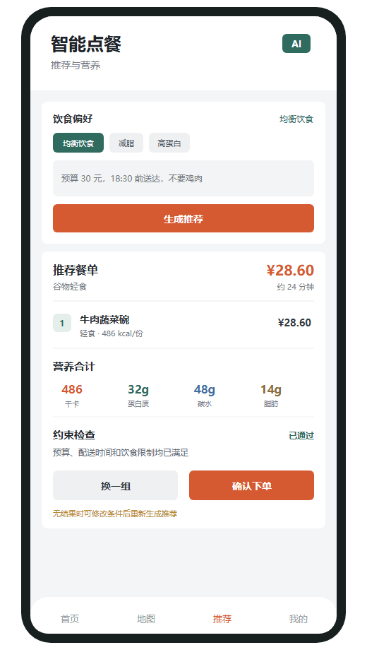

从“吃什么”走到“来不来得及吃”
“30 元以内、清淡但有肉、半小时送到、不要鸡肉。”一句普通的点餐需求，已经包含预算、口味、时效和排除项。快点（KuaiDian）围绕这样的复合需求，尝试把自然语言转化为能够检索、核算、校验和解释的点餐方案。
项目还把下一项日程纳入考虑：除了选择一顿饭，也计算最晚什么时候需要下单，帮助用户安排配送、用餐和移动时间。
模型理解需求，工具核对事实
客户端采用 HarmonyOS ArkTS 与 ArkUI，后端采用 FastAPI、LangGraph 与 SQLite。模型负责理解表达、结合会话上下文和选择工具；商家菜品查询、费用核算、营养估算和硬约束检查，则交由业务数据与确定性服务完成。
推荐不是一句“这家适合你”，而是一组可继续核对的结果：餐单、到手价、预计配送、营养估算，以及已满足的条件和仍然未知的信息。用户继续说“再便宜一点”或“换一家”时，系统结合会话重新执行工具链。

饭点行动窗口：从日程往前算
饭点行动窗口使用明确的时间运算：从下一日程开始时间，依次减去预计配送、用餐、移动与缓冲时间，得到最晚下单时刻。信息不足时需要说明不确定性；接近窗口且任务尚未处理时，才生成可接受、稍后或拒绝的任务。
材料中的开发演示使用下一日程 18:30、配送 26 分钟、用餐 5 分钟、移动 12 分钟和缓冲 5 分钟，算得最晚下单时间为 17:42；配置提前 10 分钟介入时，行动窗口为 17:32–17:42。这是一组用于验证计算逻辑的演示输入，用餐耗时应按具体场景设置。
把“建议”与“执行”接起来
由 Agent 发起的购物车、订单或画像等敏感写操作，会通过 LangGraph 中断等待用户批准。用户在独立结算、取消或图片确认页面主动提交时，则由页面操作和后端校验建立确认边界。接受饭点任务只进入推荐流程，不代表批准下单。
项目还区分订单、图片识别候选与饮食记录。图片候选需要经用户确认才能写入对应记录；营养数据保留来源和置信度，数据缺失时显示未知，避免将缺失值当成零。
目前做到哪里
项目材料记录了文本推荐、结构化方案、会话恢复、审批交互、确定性饭点窗口、任务状态处理，以及项目内购物车和模拟订单。客户端已有位置与日历上下文采集代码，真机权限、真实模型服务、签名与正式 HTTPS 环境仍需完整验收。
外部外卖平台的实时库存、真实支付与骑手履约不在当前接通范围；持续后台触达、服务卡片和跨设备协同也仍需完善。后续可以用决策耗时、推荐采纳率与明确约束满足率评估效果，而不是仅凭对话是否流畅判断应用质量。